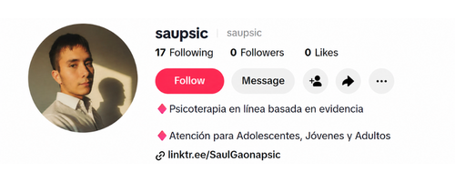
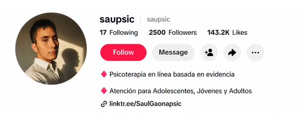
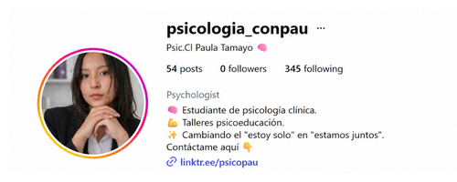
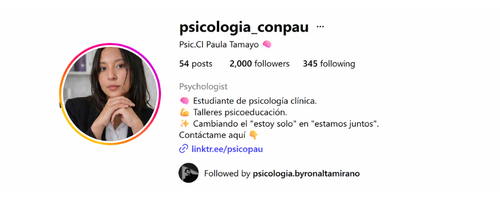

Instala el sistema de captación orgánica e Inteligencia Artificial validado para psicólogos: Construye autoridad irrefutable, satura tu agenda de citas y elimina la dependencia de referidos.
SOLICITAR DIAGNÓSTICO DE ESCALAMIENTO"Tu conocimiento clínico y años de experiencia son un desperdicio de talento si el mercado no te ve. Transformamos tu rigor académico en un sistema de autoridad digital que obliga a los pacientes premium a buscarte a ti, no al revés."
Consultor & Mentor de Marca Personal
¿Por qué mi método funciona donde otros fallan?
En un mercado saturado, el servicio es replicable, pero tu identidad no. Aplico psicología conductual y neurociencia para que dejen de comprar un beneficio y empiecen a elegirte por quién eres. Profesionales hay miles, pero solo existe una versión de ti.
No hay que pagarle al algoritmo, hay que entenderlo. Te enseño a crear contenido 100% orgánico, sin anuncios ni equipos costosos. Descifra las reglas del juego para que el algoritmo trabaje para ti gratis.
La IA no es opcional, es tu defensa contra la obsolencia. Implementamos un sistema de automatización de selección y agenda, probado por las mejores clínicas del mundo, liberándote para enfocarte en lo que importa, dar terapia.
La teoría no basta. Recibe feedback directo sobre tu comunicación, oferta y estrategia de marketing de quien ya construyó la autoridad y números que buscas, eliminando el margen de error.
Casos reales de psicólogos que pasaron de la invisibilidad absoluta a vivir de su vocación gracias a nuestra infraestructura.
(Autoridad y Tráfico Masivo)
Comparativa de Perfil


"Inicié con 0 seguidores y 0 publicidad. En un par de meses, este programa me hizo alcanzar videos de más de 768,000 visualizaciones y construir una comunidad de 2,500 personas. Pero lo importante no son los likes: convertí toda esa atención orgánica en mis primeros pacientes privados de alto valor."
(Generación de Demanda Predecible)
Comparativa de Perfil


"A punto de egresar como psicóloga y con cero habilidades en cámara. En un par de meses, este sistema generó mis primeros videos virales sin tener que mostrar mi rostro. Hoy, antes de recibir mi título, ya tengo una lista de espera de pacientes privados."
Nuestra infraestructura ya ha transformado decenas de terapeutas. Es momento de que transforme tu carrera.
Proceso de aplicación exclusivo
Programas exclusivos de mentoría diseñados para transformar tu marca, tu mentalidad y tu impacto profesional.
Inmersión 3 Meses
Incluye:
Inmersión 6 Meses
Incluye:
Inmersión 12 Meses
Incluye:

Byron Altamirano fusionó la psicología conductual con ingeniería de marketing para escalar una comunidad de +200,000 seguidores en tiempo récord. Cuenta con formación en Análisis Funcional de la Conducta (ITECOC) y más de 5 años de estudio en neurociencia y psicología. Como mentor especializado, su enfoque es estrictamente técnico: la instalación de infraestructura de Inteligencia Artificial para automatizar la operatividad básica de la consulta. El objetivo es que el profesional elimine la carga administrativa y se enfoque exclusivamente en lo único que importa: dar terapia.
Su misión es transformar el conocimiento académico en autoridad digital. Byron busca que los psicólogos sean referentes en sus áreas, capitalicen su conocimiento y dejen de competir por precio para posicionarse como la única opción lógica del mercado.